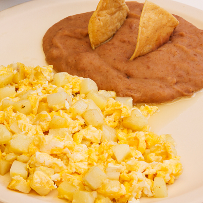

Inicio
Papas con huevo

Descripción
Papas con huevo: un plato sencillo y reconfortante donde las papas doradas se mezclan con huevos batidos, creando una textura cremosa y sabrosa, perfecta para cualquier comida.
Ingredientes
- 3 papas medianas (400-500 g)
- 4 huevos
- 3 cucharadas de aceite (45 ml)
- Sal al gusto (1/2 cucharadita o más, según preferencia)
- Pimienta al gusto (opcional, 1/4 cucharadita)
- 1/2 cebolla mediana (opcional, picada)
- 1 diente de ajo (opcional, picado)
- Perejil o cilantro fresco (opcional, para decorar)
Pasos
- Preparar las papas:
- Pela las papas y córtalas en cubos pequeños o rodajas delgadas.
- Lávalas con agua fría para quitar el exceso de almidón y sécalas con un paño o papel absorbente.
- Freír las papas:
- Calienta el aceite en una sartén a fuego medio.
-
Agrega las papas y fríelas hasta que estén doradas y tiernas (unos 10-12 minutos). Retíralas y escúrrelas en papel absorbente para eliminar el exceso de aceite.
- Preparar el huevo:
-
En un tazón, bate los huevos con sal y pimienta al gusto. Si usas cebolla y ajo, puedes saltearlos en la sartén antes de agregar los huevos.
- Combinar papas y huevo:
-
En la misma sartén (o una nueva), agrega un poco de aceite si es necesario.
-
Vierte los huevos batidos y, antes de que cuajen por completo, añade las papas fritas. Mezcla suavemente para que las papas se integren con el huevo.
- Cocinar:
-
Cocina a fuego lento hasta que el huevo esté completamente cuajado, pero aún jugoso (unos 3-4 minutos).
- Servir:
- Decora con perejil o cilantro fresco si lo deseas y sirve caliente.